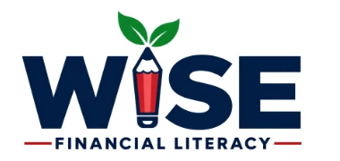

WISE equips students with real-world money skills, practical tools, and the confidence to make informed decisions about their futures. Through engaging, age-appropriate learning experiences, students learn how to earn, manage, save, invest, and plan for their goals — skills that create greater opportunities today and brighter futures tomorrow.
Designed for schools and community programs, WISE is flexible, culturally responsive, and easy to implement in a variety of settings, including classrooms, after-school programs, advisory or homeroom, and community-based programs. Whether you're a district leader, school administrator, or community partner, WISE provides the curriculum, resources, and support you need to bring high-quality financial literacy to more students.
Built for real life.
Works in schools and community programs.
Every student. Every opportunity.
Stronger students. Stronger communities.
WISE is a student-centered financial literacy program designed to give middle and high school learners the knowledge, skills, and confidence to make informed financial decisions. WISE stands for Wealth · Income · Saving · Empowerment, reflecting our belief that financial knowledge creates greater opportunities and brighter futures.
Through engaging, age-appropriate learning experiences, students build confidence with budgeting, planning, saving, and real-world money decisions. The program meets students where they are, providing practical tools and relatable examples that connect to their everyday lives and future goals.
WISE is designed for middle and high school learners and can be implemented in schools, after-school programs, advisory or homeroom settings, and community-based programs. Its flexible design makes it easy to adapt across different learning environments while maintaining a consistent, high-quality experience.
The curriculum includes three core instructional units plus a capstone experience, giving students a structured path from foundational concepts to real-world application. Throughout the program, students are encouraged to apply what they learn to authentic situations—helping them see the value of financial literacy today and into the future.
Wealth · Income ·
Saving · Empowerment
3 core units + capstone
Student workbook + teacher supports
Digital tools and family connection materials
Flexible for schools and community programs
| Item | WISE Flagship Program |
|---|---|
| Grade Band | Grades 7–12 |
| Program Structure | 3 Dimensions · 9 Units · 27 Lessons |
| Capstones | 3 Dimension Capstones + 1 Final Program Capstone |
| Core Student Path | Student Workbook + lesson activities + assessments + capstones |
| Teacher Support | Lesson plans, activity guidance, slides, assessment/answer guidance, implementation resources |
| Family Support | English and Spanish family-facing materials aligned to units/capstones |
| Digital Learning | Access-flexible digital companions with a complete non-device pathway |
| Assessment | Pre/Post reflection, Exit Tickets, Unit Reviews, Unit Quizzes in Dimension 1, Dimension Checks, Capstones |
| Implementation | Classroom, advisory/homeroom, elective, after-school/community, summer, phased or dimension-based rollout |
WISE is designed for districts and schools that want a coherent financial-literacy experience for students in Grades 7–12 and need flexibility in how the program is delivered. This package provides the complete Dimension 1 — Foundation stage.
| Setting | How WISE Can Be Used |
|---|---|
| Financial-literacy course or semester elective | Teach Dimension 1 as a coherent 9-lesson sequence. Later Dimensions may be added separately if the school adopts them. |
| Advisory or homeroom | Divide lessons into shorter sessions and preserve the core learning flow. |
| After-school or youth program | Use the scenario-based lessons, activities, and capstones in a flexible schedule. |
| Summer or intensive program | Use a condensed pacing model while protecting the essential practice and capstone checkpoints. |
| Pilot or phased rollout | Begin with one unit, one three-unit stage, or a selected grade band before broader implementation. |
| Community-connected program | Pair lessons with approved community speakers or family-engagement activities without replacing classroom instruction. |
Concrete scenarios, rounded numbers, vocabulary support, visual organizers, modeled examples, shorter decision sets, and alternate response modes.
More complex comparisons, longer-term planning, independent reasoning, and extensions connected to work, credit, investing, protection, and policy.
District and school leaders use the overview, standards, scope, pacing, onboarding, readiness, technology, accessibility, assessment, and family-engagement resources.
Teachers and facilitators use the lesson plans, Student Workbook, activities, slides, assessments, answer guidance, capstones, and training materials.
Students use the Student Workbook, student handouts, capstone files, assigned family materials, and optional digital companions.
Families and caregivers use the English or Spanish family materials and conversation guides.
| Dimension | Unit | Lessons |
|---|---|---|
| Foundation (this package) | Unit 1 Budgeting & Planning | 1.1 Introduction to Budgeting · 1.2 Needs vs. Wants · 1.3 Building a Savings Habit |
| Unit 2 Money Mindset & Values | 2.1 Understanding Money Mindsets · 2.2 Culture, Community & Family · 2.3 Financial Values & Goal Setting | |
| Unit 3 Saving, Interest & Inflation | 3.1 Emergency Savings & Financial Resilience · 3.2 Understanding Interest · 3.3 Inflation & Purchasing Power | |
| Money Moves | Unit 4 Banking & Financial Institutions | 4.1 Choosing a Financial Institution · 4.2 Checking & Savings Accounts · 4.3 Opening and Managing an Account |
| Unit 5 Credit & Debt Management | 5.1 What Is Credit? · 5.2 The True Cost of Credit · 5.3 Managing Debt | |
| Unit 6 Earning & Income | 6.1 Types of Income · 6.2 Reading a Paycheck · 6.3 Growing Your Income | |
| Building Wealth | Unit 7 Investing & Wealth Building | 7.1 Why Investing Matters · 7.2 Investment Choices · 7.3 Starting Early & Compound Growth |
| Unit 8 Insurance & Risk Management | 8.1 Understanding Insurance · 8.2 Matching Coverage to Risk · 8.3 Emergency Funds & Resilience | |
| Unit 9 Consumer Protection & Fraud | 9.1 Spotting Scams · 9.2 Consumer Rights & Protection · 9.3 Identity Theft Defense |
About the larger WISE program: WISE is designed as a larger three-Dimension financial-literacy program. This delivery package contains Dimension 1 — Foundation only. No Dimension 2 or Dimension 3 materials are required to implement Dimension 1 successfully.
What students are learning and why it matters.
Activates prior thinking or introduces a decision.
Develops the core concept.
Models the reasoning or calculation.
Gives students supported practice.
Transfers the skill to a new or realistic scenario.
Captures evidence of learning and student confidence.
Some lessons also include reflection, research, additional practice, activities, or digital companions when they support the learning outcome. Digital access never replaces the core workbook path.
Reflection — deeper thinking about what's been learned.
Research — guided exploration of real-world topics.
Additional Practice — extra reps when it supports mastery.
Activities — engaging tasks that deepen connections.
Digital Companions — optional tools and simulations.
Unit Reviews and Bridges — connect learning and preview what's next.
Unit Quizzes — formal unit-level checkpoints.
Dimension Capstones — apply and synthesize learning across a dimension.
Final Program Capstone — a culminating, program-wide demonstration.
Students understand why a financial idea matters before being asked to use a formula, process, or decision tool.
Students calculate, compare, interpret, explain, decide, revise, and justify rather than only memorize vocabulary.
Important ideas return at increasing levels of complexity — from saving habit to emergency savings to financial resilience.
Decisions are shaped by knowledge, beliefs, values, family and community experiences, access, opportunity, and risk.
Students are never required to disclose private household financial information to participate meaningfully.
The lesson, workbook, activity, and assessment pathway remains complete without digital tools.
Schools can adapt pacing and delivery while preserving the instructional sequence and essential learning outcomes.
The student learning system includes:
The Student Workbook is the primary student learning path.
The flagship teacher package includes:
Teacher materials make the instructional intent visible — not only what to teach, but how each lesson connects to the larger program.
The activity system includes lesson-aligned core or recommended activities, selected optional extensions, collaborative practice, decision-making tasks, research and comparison activities, scenario-based application, and student recording pages where needed. Activities support the lesson rather than replace the Student Workbook learning path.
WISE uses multiple forms of evidence rather than relying on one test.
Pre-Assessment and Post-Assessment separate confidence growth from demonstrated skill.
27 lesson Exit Tickets and formative checks within lessons.
Unit Reviews and Vocabulary Reviews, plus one formal 20-point Unit Quiz per unit in Dimension 1.
Dimension Checks I–III, Capstones I–III, and the Final Program Capstone.
Open-response and financial-choice tasks are evaluated for accurate reasoning, relevant evidence, and recognition of trade-offs. Personal financial choices are not scored against one required lifestyle preference.
WISE includes an expanded digital-tool ecosystem with 31 instructional or capstone tools plus the Interactive Learning Hub. Digital tools may support lesson practice, comparison and calculation, decision-making, simulations, planning, capstone work, and navigation.
Digital companions are access-flexible. They do not replace or block the core curriculum path. Every lesson retains a meaningful non-device pathway so a lack of devices, live internet access, or approved hosting does not prevent students from reaching the essential learning outcome.
Dimension 1 includes 10 optional digital companions plus the Interactive Learning Hub. The complete core learning pathway can be taught without student devices.
WISE includes family-facing materials in English and Spanish. The family system includes:
Family materials support conversation without asking families to disclose private financial information or reteach the complete lesson at home. Family participation is supportive and optional.
Teachers emphasize:
Teachers can increase:
The complete WISE roadmap is designed for 27 lessons, three Dimension Capstones, and a Final Program Capstone. This delivery package covers Dimension 1 — Foundation.
Longer class periods allow deeper activity integration, digital companions, additional practice, and capstone development.
Lessons divide into shorter sessions while preserving the Warm-Up → Learn → Worked Example → Practice → Apply → Exit Ticket sequence.
Flexible session pacing combines relationship-building, core instruction, collaborative activities, and capstone work.
Concentrated scheduling protects core practice and assessment checkpoints.
A school or district may implement Foundation, Money Moves, or Building Wealth as a coherent three-unit stage before expanding to the full program.
A condensed or partial implementation should be identified as such and should not be represented as equivalent to completion of the full 9-unit program.
Instruction should:
Use fictional, sample, rounded, public, or teacher-provided information.
Avoid requiring household income, debt, account information, credit scores, insurance details, identity data, or passwords.
Allow students to generalize or use fictional examples for sensitive reflection.
Treat differences in income, access, family structure, culture, and community resources without shame.
Provide non-device learning paths and support multilingual learners.
Allow multiple defensible financial choices when students can explain their reasoning.
The flagship standards system aligns the curriculum to current Illinois Social Science Financial Literacy expectations for Grades 6–8 and Grades 9–12, as applicable to the WISE grade band; the National Standards for Personal Financial Education; and supporting academic standards where the lesson directly teaches and assesses the related skill.
The separate WISE Standards Alignment Master Crosswalk is the authority for specific codes, lesson-level mappings, grade-band accommodations, and alignment cautions. Districts may add local or state-specific crosswalks during adoption.
This WISE delivery package provides the complete Dimension 1 — Foundation stage, organized across program, teacher, student, family, data, and optional community resources.
Program Guide, Scope & Sequence, Pacing Guide, Standards Alignment, administrator/readiness/technology/accessibility resources, assessment & data guidance.
Lesson plans for Units 1–3, Activity Book — Teacher Edition, Assessments & Answer Keys (three 20-point Unit Quizzes), slide source, PD resources, Assignment & Grade Tracker.
Dimension 1 Student Workbook, Student Activity Handouts, Capstone I — My Financial Future, optional digital companions.
English family materials, Spanish family materials, launch/welcome communications.
Assessment Implementation Walkthrough, Data & Reporting Toolkit, Data Tracker, Assignment & Grade Tracker, Program Summary Report Template, Teacher Dashboard specification.
Guest Speaker & Community Partner Guide, Capstone I Showcase Guide, Capstone I Showcase Invitation.
Program note: Dimensions 2 and 3, Capstones II and III, and the Final Program Capstone are part of the broader WISE architecture and are separate from this Dimension 1 package.
This example shows how the WISE components work together during one lesson. It is a sample of the instructional system, not a script that replaces the unit lesson plan.
Example: Lesson 1.1 — Introduction to Budgeting. Before class, the teacher opens the Unit 1 lesson plan, the matching Student Workbook section, the related Activity Book directions, and the Lesson 1.1 exit-ticket guidance, then chooses the core activity and prepares the sample scenario.
| Component | Role in the Lesson |
|---|---|
| Lesson plan | Teacher language, timing, differentiation, privacy guidance, and lesson flow. |
| Student Workbook | Instruction, examples, practice, application, reflection, and exit ticket. |
| Activity Book | Teacher directions and debrief for collaborative practice. |
| Slide source | Optional visual support for pacing, prompts, and examples. |
| Digital companion | Optional interactive practice when the district chooses to use it. |
| Assessment & answer guidance | Evidence and feedback for the lesson objective. |
The teacher can use the complete paper path, add a collaborative activity, project the slide source, use a digital companion, or combine those modes. The essential learning outcome remains intact across classroom conditions.
One lesson demonstrates the larger WISE design: consistent lesson flow; alignment between teaching, student work, activity, and assessment; a non-device path that is complete rather than an emergency substitute; privacy-safe fictional scenarios; grade-band accommodations; and a clear bridge from lesson learning to capstone work.
WISE Financial Literacy helps students build practical financial reasoning, confidence, and agency through a complete learning journey—not a collection of disconnected worksheets or a digital tool that assumes every classroom has the same access.
Lesson plans, Student Workbook, activities, assessments, and capstones form a usable instructional sequence.
Students complete the program without devices; digital companions add practice rather than replace the curriculum.
Students examine values, money messages, culture, community, access, and structural conditions alongside financial mechanics.
Fictional, sample, rounded, and teacher-provided scenarios make meaningful learning possible without household disclosure.
Students calculate, compare, explain, decide, communicate, and revise—not simply memorize vocabulary.
Three staged capstones and a final synthesis project connect learning across the nine units.
Districts can use WISE as a course, advisory sequence, enrichment program, summer program, pilot, or phased rollout.
English and Spanish family materials help caregivers understand the learning and support conversation at home.
A practical adoption question: WISE is a strong fit for a district that wants financial literacy to be teachable, adaptable, privacy-safe, standards-informed, and usable across different classroom realities. Begin with the Dimension 1 District & School Readiness Checklist, School Leader Overview, Pilot & Adoption Guide, and Standards Alignment.
Students who complete the full WISE sequence across all three Dimensions will have worked through:
They have practiced how to plan and adjust a budget; connect financial decisions to values and goals; save and reason about interest and inflation; navigate financial institutions and accounts; understand credit, borrowing cost, and debt strategies; interpret income and take-home pay; distinguish saving from investing and evaluate investment choices; use insurance and emergency savings to manage risk; and recognize fraud, use consumer protections, and respond to identity theft.